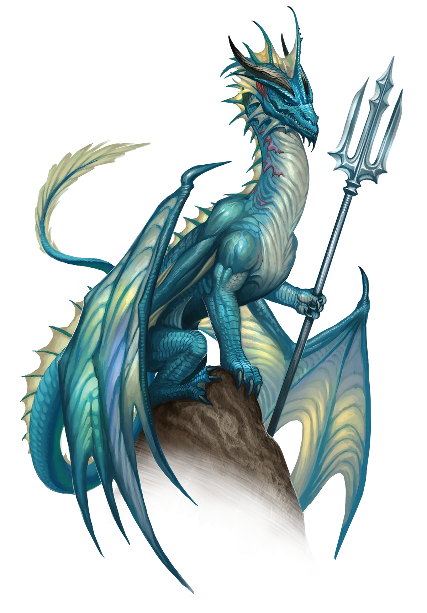
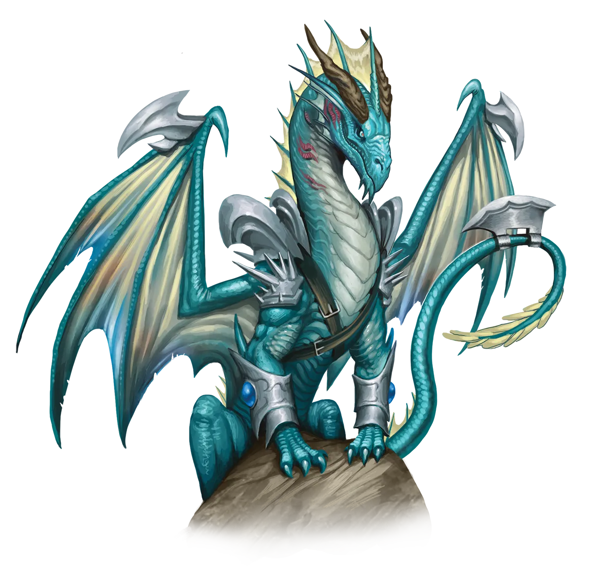

队伍资金采购
当盐水龙通过复杂的冒险队伍章程筹集队伍资金时，它们倾向于购买自认为最符合队伍利益的东西。这通常包括其他队员在攒钱购买昂贵物品途中可能忽略的道具，尤其是消耗品或有助于应对最坏情况的物品。手持生命之息卷轴的牧师可以挽救一条性命，而一枚不起眼的枭熊爪，虽对除最低级冒险者外的所有人而言微不足道，却能在苦战中发挥关键作用。关于这些战术，意见固然各异。
盐水龙 Brine Dragon |
|
|
盐水龙痴迷于坚守一套浸透着严格行为与礼仪标准的日常程序。因此，它们中很少有龙会执行永恒之光仪式，因为那代表着对日常的瓦解。少数永光盐水龙被传统派排斥，在后者眼中，它们代表着格格不入的事物，一种效率低下，令井井有条的大局显得刺目。但对永光盐水龙而言，永恒之光仪式是新生活、新日常的一部分，只是与从前不同罢了。由于盐水龙极为固执己见，永光盐水龙坚信自己的观念是正确的，这导致它们试图纠正传统主义亲族“错误”的观点，而实际上，它们若能无视传统盐水龙、转而寻找一群志同道合者，处境会好得多。 永光盐水龙通常会寻求建立自己的冒险队伍，为团队起草一份详尽章程，通常将盐水龙置于领导地位，但始终为整个团队施加规则、指导和费用结构。盐水龙的规则通常旨在促进冒险队伍的整体实力与成功，使其如发条般运转，但这意味着它们通常不会为个人需求或怜悯破例。这可能会与队伍中更注重个体的成员产生摩擦，因此盐水龙在可能的情况下会尽量避免与这类盟友合作。如有必要，它们会修订章程，以达成让同伴愿意追随的程度。这对完美主义者而言是艰难的一课，但许多永光盐水龙已经学会：一套被严格遵守的有瑕规则，胜过一套无人遵守的完美规则。 不出所料，章程中内置的费用结构有时会让冒险同伴感到不适。许多潜在盟友对任何非平均分配或共享物品的理念深表怀疑，以为盐水龙意在挪用通过费用收集的财富以扩充自己的宝库。然而，盐水龙会将队伍资金善加利用，购买实用的消耗品，获取有助于移除危险状态和痛苦的道具，并建立应急基金以备队伍突然需要购买、贿赂甚至复生术之时。因此，大多数能与盐水龙强迫而完美主义的天性以及其对规则的渴望达成妥协的队伍会发现，龙在处理没人愿意碰的库存管理和后勤任务方面提供了巨大效益。教令龙和盐水龙冒险者常常一见如故，对彼此的统筹规划一见倾心。然而，当它们不对付时，就会因品味冲突而不可调和地对立，不断互相挑剔对方的完美之处，陷入一场双方都无法满足的往复较量。盐水龙喜爱那些便于说服他人遵从己见的职业，例如基于魅力的职业。 队伍资金采购 当盐水龙通过复杂的冒险队伍章程筹集队伍资金时，它们倾向于购买自认为最符合队伍利益的东西。这通常包括其他队员在攒钱购买昂贵物品途中可能忽略的道具，尤其是消耗品或有助于应对最坏情况的物品。手持生命之息卷轴的牧师可以挽救一条性命，而一枚不起眼的枭熊爪，虽对除最低级冒险者外的所有人而言微不足道，却能在苦战中发挥关键作用。关于这些战术，意见固然各异。 盐水龙特质 Brine Dragon Traits 你出身于一脉来自水元素位面、执着于严苛礼仪与纪律的盐水龙世系。 |
  |